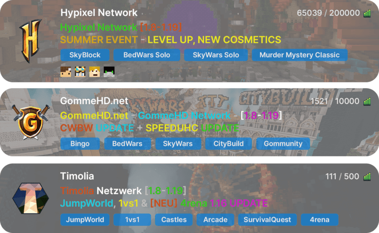

Novità LabyMod 4
Scopri esattamente su cosa stiamo lavorando e le novità su LabyMod 4 e altri progetti! I nostri sviluppatori vi terranno aggiornati!
Per accedere al sito esegui Minecraft con l' ultima versione di LabyMod e clicca sulla tua testa sul menu principale oppure sulle impostazioni LabyMod.

Se hai difficoltà ad eseguire Minecraft con LabyMod oppure non riesci a trovare la tua skin nel menu principale, assicurati di avere l'ultima versione di LabyMod.
Nota che devi aver per forza acquistato Minecraft Java Edition per registrarti.
FPS bassi, blocchi e lag ora appartengono al passato. Con LabyMod potrai raggiungere prestazioni migliori e rendere il tuo gioco fluido come mai prima d'ora.
Motore di Render Migliorato
Prestazioni Raddoppiate
Dannatamente Fluido

Testata in svariati server multiplayer e in single player con le impostazioni default su Windows con una CPU Ryzen 9 e una GPU RTX 2080.
Dipende tutto da te! Scegli tra un tema moderno in alta risoluzione o uno classico e iconico stile Minecraft quando vuoi.
Abbiamo creato LabyMod 4 in modo che possa essere aggiornato alle recenti versioni di Minecraft in pochi secondi. Quando viene annunciato un nuovo snapshot, LabyMod potrà essere pronta all'utilizzo ancora prima che finisci di leggerne le novità!
Al lancio supporteremo le seguenti versioni:
Ritrovati con i tuoi amici o incontrane di nuovi - in ogni modo - la nostra chat vocale renderà il gioco ancora più divertente. Con l'addon VoiceChat pronto all'uso su ogni server multiplayer e senza ulteriori passaggi richiesti.
La nuova chat di MInecraft
Abbiamo implementato delle categorie nella tua chat di Minecraft, così potrai passare da una conversazione all'altra senza perdere il segno!
Puoi pure spostare la finestra liberamente per lo schermo senza aprire alcuna impostazione di Minecraft.
Puoi testare la funzione qui
Lista Server Migliorata
Abbiamo migliorato la lista dei server, in modo da unirti al gioco direttamente senza entrare nella lobby del server
Screenshot Interattivi
Abbiamo reinventato il modo di condividere i momenti su Minecraft. Fai un salto nei tuoi ricordi come mai prima d'ora! Con gli screenshot 3D e il rilevatore automatico dei giocatori potrai condividere i tuoi ricordi migliori in gioco in modo più pratico e divertente!

Forge & Fabric Support
Modificare il gioco non è mai stato così semplice. Utilizza facilmente tutte le mod preferite con la LabyMod!
Amici
Rimani connesso con i tuoi amici usando la chat LabyMod!
Abbiamo aggiunto una chat indipendente dal server in cui stai giocando, in modo che possa comunicare con altri giocatori ed i tuoi amici dovunque e quando vuoi.
Gestore Account
Nessun bisogno di riavviare il gioco! Grazie al nostro gestore account integrato sarai in grado di risparmiare tempo passando da un account Minecraft all'altro direttamente in gioco, Comodo, no?


Se vuoi giocare insieme ai tuoi amici, non hai più bisogno del tuo server!
Il nuovo Launcher di LabyMod si avvia molto più velocemente e in modo più affidabile rispetto all'originale Launcher di Minecraft!
Inoltre è molto più pulito e facile da usare. Avviare Minecraft non è mai stato così facile e veloce!
With the new ingame skin browser you can manage your Minecraft skin directly in the game!
Besides some settings, you also have access to the huge laby.net skin library to browse and apply skins with just one click!
Personalizza la tua esperienza in LabyMod con fantastici Addons!

See OptiFine Capes, use HD texture packs with connected textures, enhance your gaming experience with a performance boost, and top it off with shaders!

Allows you to change the brightness of the game to full brightness.

This addon displays the health of all players that are nearby.

All items and blocks have a completely new animation while falling and have physics as drops!

Lets you display your keyboard individually as a HUD widget.

Totally free in-game voice chat for Minecraft with 3D surround sound. Play together like never before

Enables you to view your skin from every angle in the third-person perspective without moving your head. Our re-imagined alternative to freelook or 360-mod!

Give your Minecraft a fresh new-look by installing resource packs from one of the biggest texture library in the world within seconds!

Fully customize the look of your crosshair ingame and share your design with your friends!

Displays the time until a tnt explodes over the tnt.

Enables you to keep sneaking/sprinting without having to hold the button down. This addon also implements ToggleSprint.

Control your music directly in LabyMod and share your current song to fellow Spotify addon users!

Minimap shows you a small map with an overview of the surrounded world.

Allows you to activate a highly customizable outline and overlay to the block you’re currently looking at.

Find your friends quickly and easily among hundreds of other Minecraft players thanks to their own nicknames!

Load Fabric mods into LabyMod.

Adds customization options to the hurtcam animation

Allows you to set waypoints in the world. Compatible with Laby's Minimap.

Upload your own HD Skin for your player! Everyone with this addon can see it. Support: https://discord.gg/KN8rDZJ

See a name tag above the heads of your Labychat friends.
Tutti i nostri cosmetici sono creati a mano e con amore con l'obbiettivo di abbinarsi perfettamente allo stile del gioco. Sono animati con passione e molto personalizzabili. Puoi scegliere tra svariati colori per abbinarsi facilmente allo stile del tuo personaggio!
Scopri esattamente su cosa stiamo lavorando e le novità su LabyMod 4 e altri progetti! I nostri sviluppatori vi terranno aggiornati!
Sei convinto? Sperimenta tutte le funzionalità di persona e scarica gratuitamente LabyMod 4!
Scarica